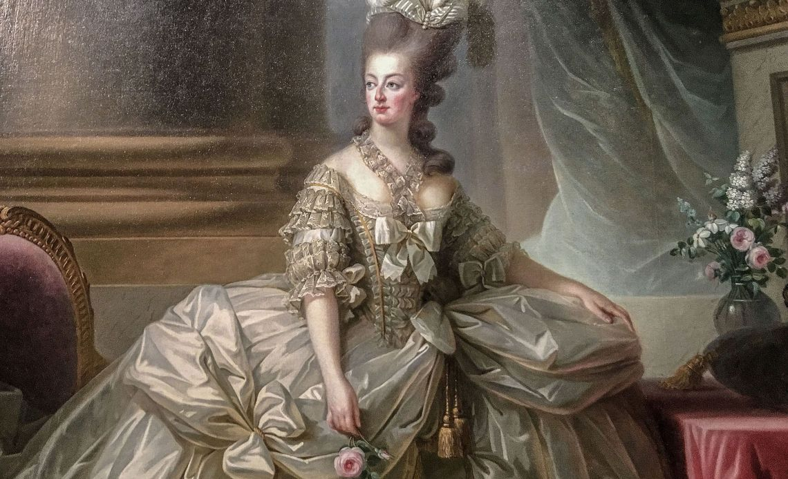

Marie Antoinette
"Qu'ils mangent de la brioche"

Painting of Marie Antoinette in a grand dress by Élisabeth Vigée Le Brun - 1778
Time line of Marie Antoinette's life:
- 1755 - Born in Vienna, Austria at the Hofburg Palalce
- 1762 - Met Wolfgang Amadeus Mozart at 7
- 1770 - Married by proxy to Dauphin of France, Louis Auguste
- 1774 - Marie Antoinette becomes Queen after King Louis XV's death
- 1778 - Marie is offically pregnant with her daughter and 8 months later Marie-Therese Charlotte is born
- 1780 - She participates in amateur plays and musical theatre at Petit Trianon built by Richard Mique
- 1781 - Louis-Joseph-Xavier-Francois was born
- 1785 - Marie gave birth to her second son, Louis Charles
- 1786 - Her second and last child, Marie Sophie Helene Beatrix was born but died in infancy
- 1791 - Marie's entire family was arrested at Varennes and was taken back to Paris
- 1792 - French Revolutionary Wars starts and the monarchy ends when a "mob" broke into the Tuileries Palace
- 1793 - Marie Antoinette was tried by the Revolutionary Tribunal and declared guilty for depletion of the national tresury, conspiracy against the internal/eternal security of the State, and high treason
- 1793 - Dies at the age of 37 by guillotine
Courage! I have shown it for years; think you I shall lose it at the moment when my sufferings are to end?
-- Marie Antoinette